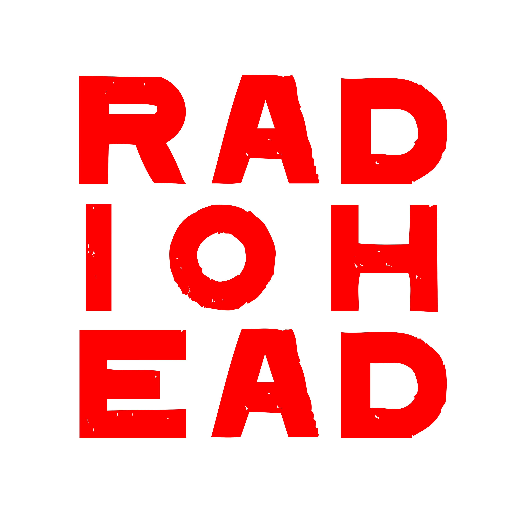
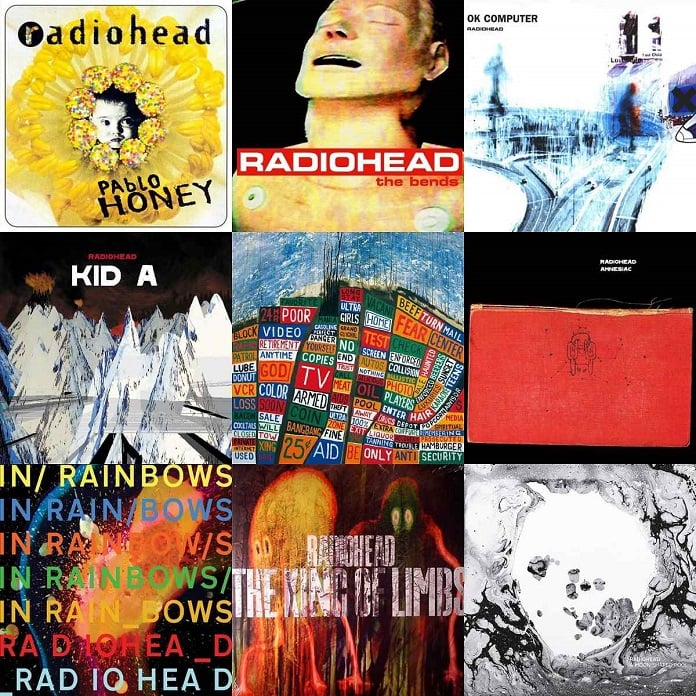

Radiohead é uma banda britânica de rock alternativo, formada no ano de 1985 em Abingdon, Oxford por Thom Yorke, os irmãos Jonny Greenwood e Colin Greenwood, Ed O'Brien e Philip Selway. Desde 1994 a banda têm trabalhado com o produtor Nigel Godrich e Stanley Donwood na produção das capas dos álbuns.
Seus Albuns são famosos mundialmente
